Bitimage to Geospatial Information 使い方
オーサリング
- (図1)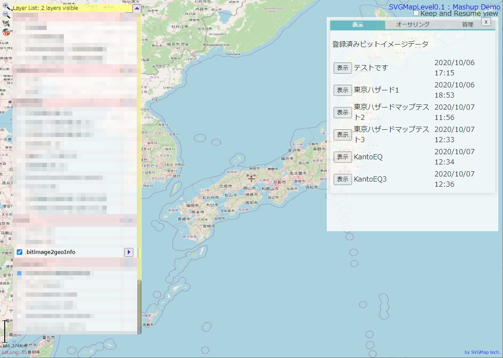 ツールのレイヤーを開いたところ
- (図2)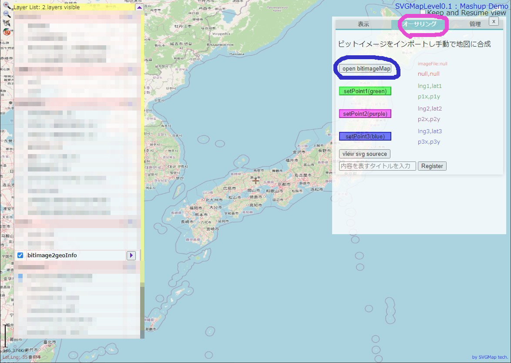 オーサリングタブを選んだ後（紫）、Open bitimageMapボタンを押す（青）と、ウィンドが開く
- 画像を読み込む
- (図3 紫)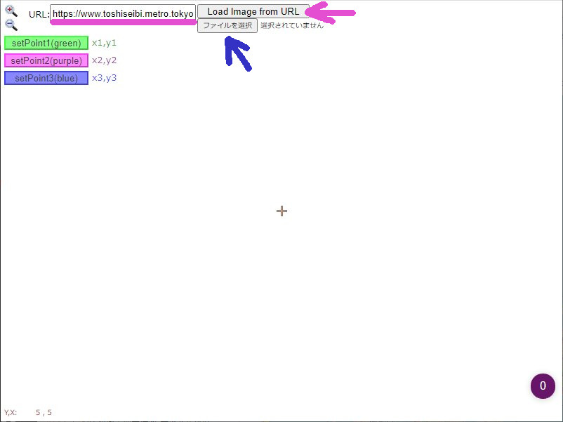 Web上の画像の場合： bitimage mapのURLを入力して(紫〇)、Load Image from URLボタンを押すか(紫←)
- (図3 青) ローカルの画像の場合：[ファイルを選択](青←)してローカルのビットイメージを読み込ませる (PDF内に埋め込まれた画像などはPDF画像抽出やスクリーンキャプチャなどを駆使・・)
- (図4)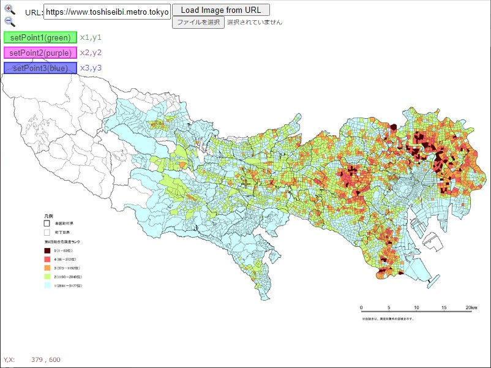 読み込んた状態
- 画像基準点入力（少なくとも２点）
- (図5)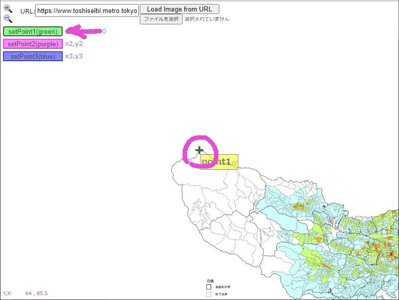 １点目：伸縮スクロールして特徴的な点を中心に持っていき（紫〇）、[setPoint1]（紫←）を押して１点目を入力
- (図6 紫)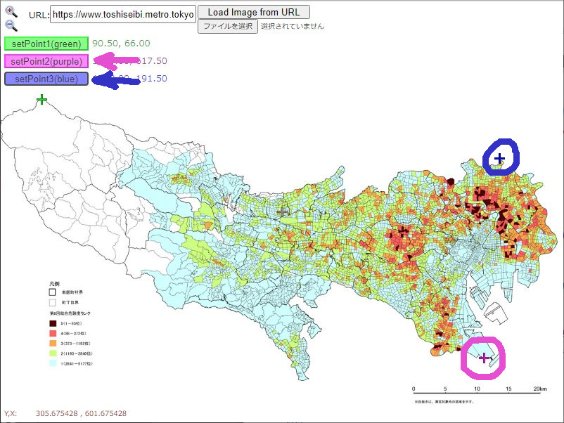 ２点目：紫〇、紫← （なるべく1点目と離れた対角にある点を設定します）
- (図6 青) ３点目：青〇、青← （オプショナル～精度が上がることがあります なるべく大きな三角形になる点を設定）
- (図7)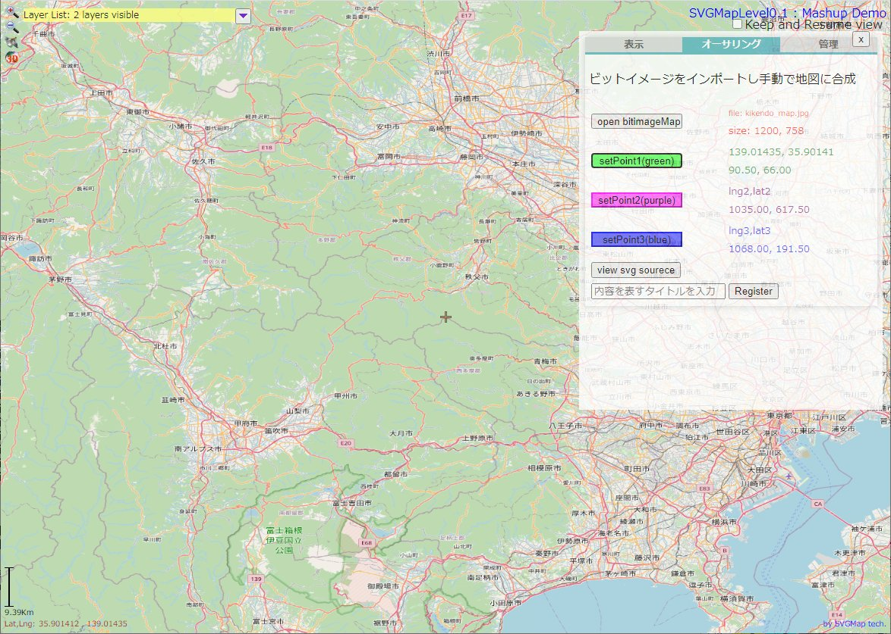 元の地図ウィンドゥに戻り
- 地図上で 上記で設定した点に対応する点を入力する。操作方法は上と同じ
- (図8)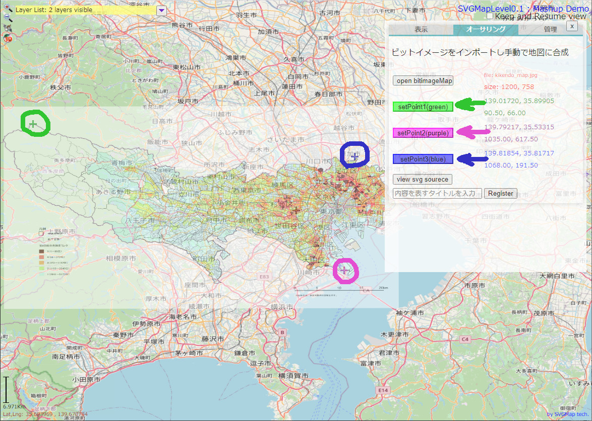 （注：上で２点しか入力していなければ２点でOK）
- (図9)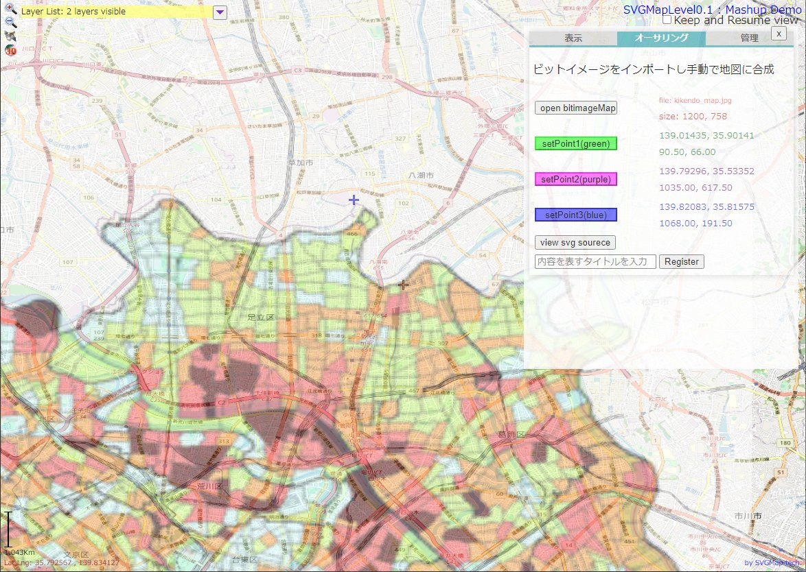 （この段階で合成されるが、精度はそれほど高くない: 拡大してずれがある様子）
- (図10)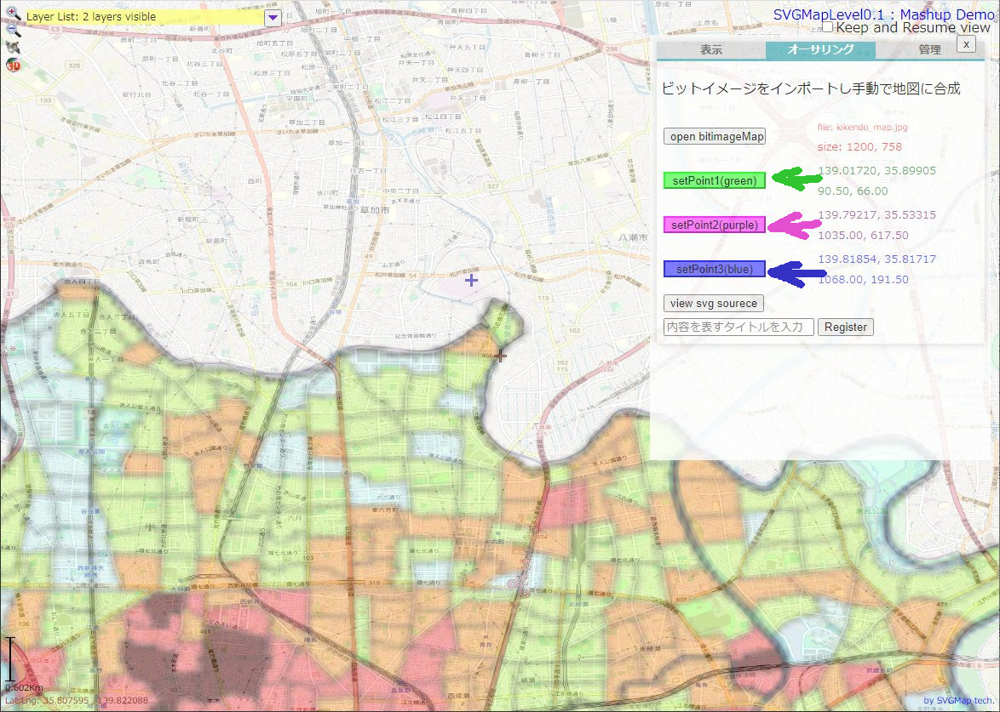 そこで、拡大して対応するポイントを細かく調整を繰り返す（ボタンは何回押してもOK（緑、紫、青←））
- これでOKと思ったら、以下のいずれかで内容を記録する
- (図11)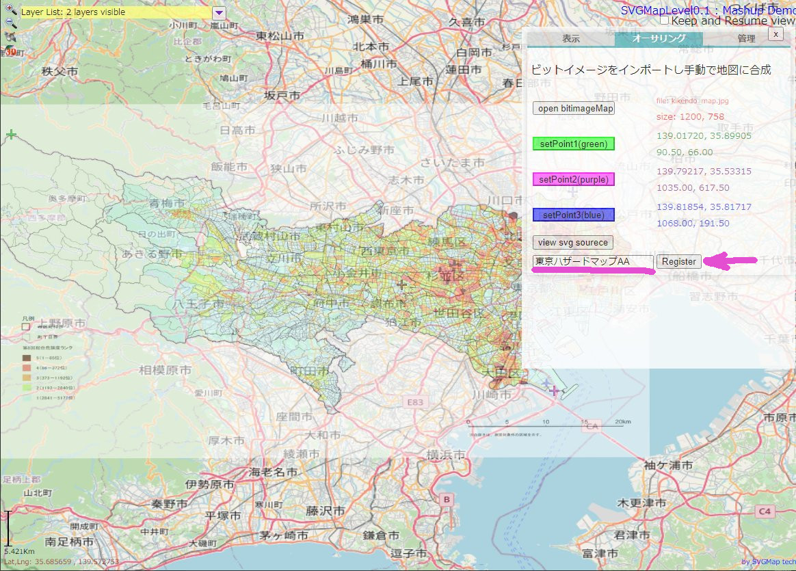 サーバに保存 内容を表すタイトルを記入して（紫＿）、[Register]（紫←）を押すと、登録される
- (図12 青) ソーステキストをローカルに残す [view svg source]を押す（青←）
- (図13 紫)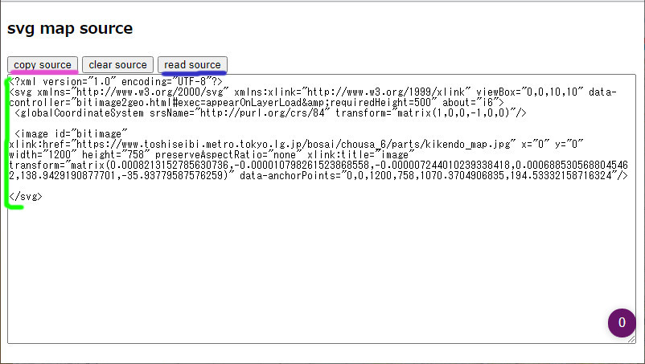 ウィンドが開きソースが表示されるので、これをコピー([copy source])(紫_)、又はソース(緑)を全選択してコピー(CTRL-C))し、テキストエディタなどで保存する
保存したものの表示
- サーバに保存した場合
- (図14)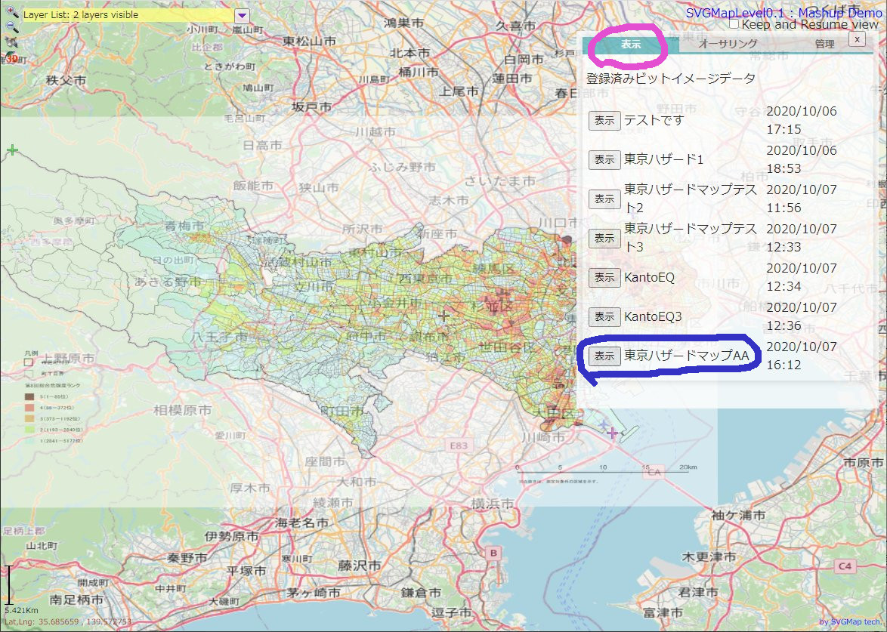 サーバに保存した場合： 表示タブ（紫〇）を選ぶと、追加されている（青〇） ボタンを押せば表示される
- ローカルで持っていたソーステキスト
- (図12 青) オーサリングタブの[view svg source]を押す（青←）
- (図13 緑・青) ソース表示欄(緑)にテキストをペーストし、[read source](青＿)を押す ([clar source]を押すと元々表示されているソースを消去できるのでペーストしやすい)